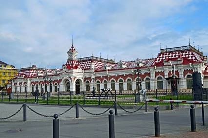

Екатеринбург
Путеводитель
Официальный сайт города: https://екатеринбург.рф/
Дополнительные
информационные ресурсы, посвященные городу:
 Сайт
для путешественников – http://tourism.ekburg.ru/
Сайт
для путешественников – http://tourism.ekburg.ru/
 Официальный
телеграмм канал города – https://t.me/e_burg
Официальный
телеграмм канал города – https://t.me/e_burg
 Официальная
группа в социальной сети ВКонтакте города – https://vk.com/inburg
Официальная
группа в социальной сети ВКонтакте города – https://vk.com/inburg
Общие сведения о городе:
Екатеринбу́рг (с 14 октября
1924 по 23 сентября 1991 — Свердло́вск) —
четвертый по численности населения и территории город-миллионер в России,
административный центр Уральского федерального округа и Свердловской области.
Образует муниципальное образование «город Екатеринбург» со статусом городского округа[8]. Является крупнейшим экономическим,
административным, культурным, научно-образовательным центром Урала. Площадь
города составляет 1111,702 км в квадрате.
Расположен на восточном
склоне Среднего Урала, по берегам реки Исети, в её верхнем течении.
Дополнительные материалы:
https://ru.wikipedia.org/wiki/Екатеринбург
Карта города, вид со спутника:
https://yandex.ru/maps/54/yekaterinburg/sputnik/
https://online-maps.pro/karta-sverdlovskoj-oblasti/karta-ekaterinburga-s-ulicami-i-domami/sputnik/
https://u-karty.ru/sputnik/ekaterinburg-so-sputnika.html
Историческая справка: https://екатеринбург.рф/%D0%B6%D0%B8%D1%82%D0%B5%D0%BB%D1%8F%D0%BC/%D0%B3%D0%BE%D1%80%D0%BE%D0%B4/%D0%B8%D1%81%D1%82%D0%BE%D1%80%D0%B8%D1%8F
Фотогалерея: https://wikiway.com/russia/ekaterinburg/photo/
Достопримечательности
города:
|
Описание |
Фото |
|
Храм
на Крови был построен чуть меньше двадцати лет назад и не славится богатой
историей, в отличие от места, где он стоит. С конца 1880-х и по 17 сентября
1977 года здесь находился дом, построенный Н. Н. Ипатьевым — русским офицером
и инженером. В 1918 году здесь на протяжении 78 дней под арестом содержался
Николай II, его жена и дети, а 17 июля 1918 царскую семью и 4-х слуг
расстреляли большевики в полуподвальном помещении дома Ипатьева. Позднее в
доме размещался музей и архив, а в 1977 году его снесли, так как среди
населения стало популярным приходить к месту гибели царской семьи, ставить
свечи и молиться, что в СССР было сродни государственной измене. И всё же
Союз распался, а память о последнем императоре, каким бы ни было его
правление, сохранилась. Ежегодно 17 июля у храма на Крови совершается
божественная литургия, призванная почтить память императорской семьи. |
|
|
Дом
Севастьянова Ещё
один памятник архитектуры, мимо которого нельзя просто пройти, — это дом
Севастьянова, построенный в 1866 году. Глядя на масштабы и изысканный стиль,
особняк Севастьянова скорее хочется назвать дворцом, нежели обычным домом. В
архитектуре здания сплелись сразу несколько архитектурных стилей, среди
которых эклектика, барокко, неомавританский и даже
немного готики. Столь примечательное здание в советское время не могло стать
техническим училищем или же чем-то подобным, поэтому долгое время здесь
заседали местные представители коммунистической партии, а после Перестройки
здание сдавали различным конторам под офисы. Такое обращение негативно
сказалось на исторической сохранности дома Севастьянова, но благодаря
реставрации удалось восстановить былой вид интерьера и экстерьера. Сейчас по
внутренним помещениям особняка проводят экскурсии, на которых вы сможете
воочию увидеть как жили дворяне в Екатеринбурге 150
лет назад. |
|
|
Улица
Вайнера Улица
Вайнера считается одной из самых старых в Екатеринбурге, а впервые она
упоминается всего через несколько лет после основания города. Как и любая
улица со столь продолжительной историей, эта неоднократно перестраивалась,
видоизменялась и, конечно же, переименовывалась. Своё современное название она
получила в 1919 году в честь большевика Л. И. Вайнера — одного из лидеров
коммунистического движения на Урале. Практически с момента своего основания
улица была одним из главных торговых центров Екатеринбурга, сохранила она
этот статус и сегодня. Здесь вы найдете не только старинные здания, скамейки
для отдыха, фонтаны и памятники, но и множество магазинов и уютных заведений,
где можно вкусно перекусить после прогулки по этой красивейшей улице. |
|
|
Старый
вокзал Когда-то
именно это здание было первым, что видели все прибывающие в Екатеринбург на
поездах, но сегодня Старый вокзал уже не используется по прямому назначению.
Здание было построено в 1878 году, а за 360 километров от Екатеринбурга — в
Перми — можно найти «брата-близнеца» — вокзал, построенный по тому же
проекту. Пассажиропоток на Старом вокзале стал заметно меньше ещё в 1914
году, так как была построена новая железнодорожная станция, а эту стали
использовать для обслуживания военных поездов. В начале двухтысячных здание
подверглось комплексной реставрации, а внутри открыли музей, посвященный
истории развития Свердловской железной дороги. Экспозиция разделена на две
части, одна из которых рассказывает о технической части, а вторая погружает в
историю железнодорожного дела. Не стоит упускать и тот факт, что сам вид
здания Старого вокзала будет интересен для всех, кто увлекается
дореволюционной архитектурой. |
 |
|
Храм
Вознесения Господня Храм
Вознесения Господня был заложен в 1770 году и на момент постройки представлял
собой деревянное сооружение весьма скромных масштабов. XIX век в истории
храма стал периодом постоянных перестроек и расширений, а к началу следующего
столетия здание приобрело максимально приближенный к современному вид. Как и
большинство церквей в СССР, в 1920-е храм Вознесения Господня был закрыт
властями, а все ценности национализированы. После недолгого простоя, внутри
уже бывшего храма открылась школа, а затем и исторический музей. Лишь с
распадом СССР, где религия подвергалась массовым гонениям, в 1991 году в
стенах храма наконец-то прошла первая за почти 70 лет литургия. Ныне храм всё
так же является действующим, оставаясь при этом одним из лучших примеров
сочетания барокко и классицизма в архитектуре Екатеринбурга. |
|
Текст
гимна города Екатеринбурга
Веялсам
Наш
город трудовой, известен всей России,
Основан
по указу Великого Петра.
Названье
получил он в честь Екатерины.
Давно
в нём поселились мастера.
Не
просто было здесь в лесу дремучем
Плотину
выстроить и заложить завод,
Но
мы признательны энергии могучей –
То
был умов Татищева и Геннина полёт.
ПРИПЕВ:
Екатеринбург будет славен вовеки!
Екатеринбург – город мира и труда!
Екатеринбург – это гордость человека!
Екатеринбург – уральская звезда!
Шло
время. Год сменялся годом.
Наш
город возмужал, окреп, стал знаменит.
В
двадцатом веке выстроен «Завод заводов»,
Река
Исеть примерила гранит.
В
истории всё было: и радости и беды,
И
кровь лилась, и первый был салют.
В
войну была здесь кузница Победы,
России
первый президент жил и работал тут.
ПРИПЕВ
Растёт,
цветёт и хорошеет город.
Его
судьба теперь в руках у нас.
Вот
потому он так нам всем любим и дорог.
Свой
труд мы отдаём ему сейчас.
Идут
года, сменяя поколенья.
Всё
лучшее останется в веках!
Свобода
разуму, пусть торжествует гений
Ума,
таланта, воли в российских городах!
ПРИПЕВ
Ссылки
на музыкальные и видеоклипы, связанные с городом Екатеринбургом: